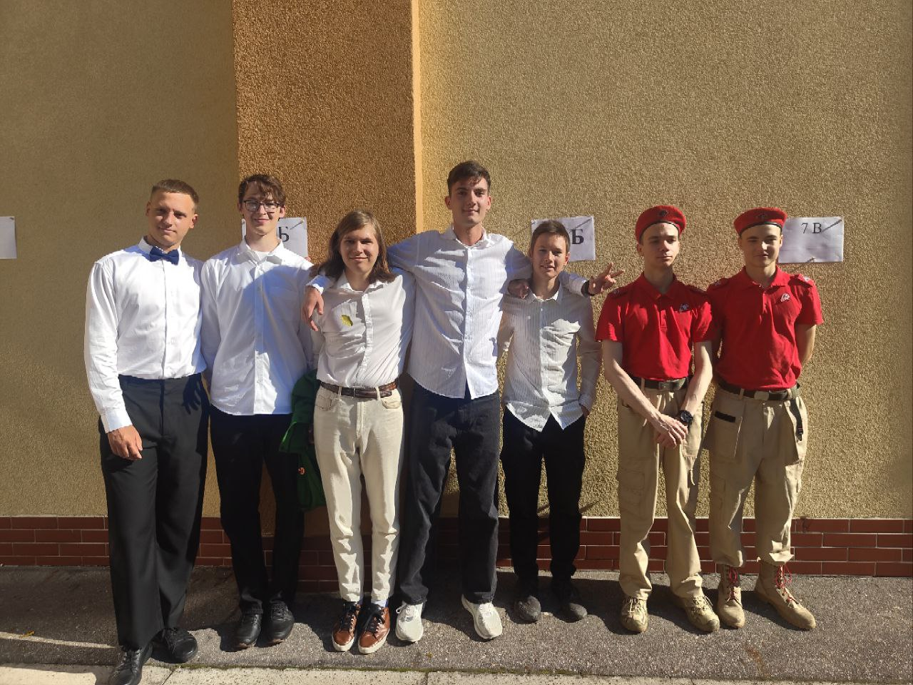
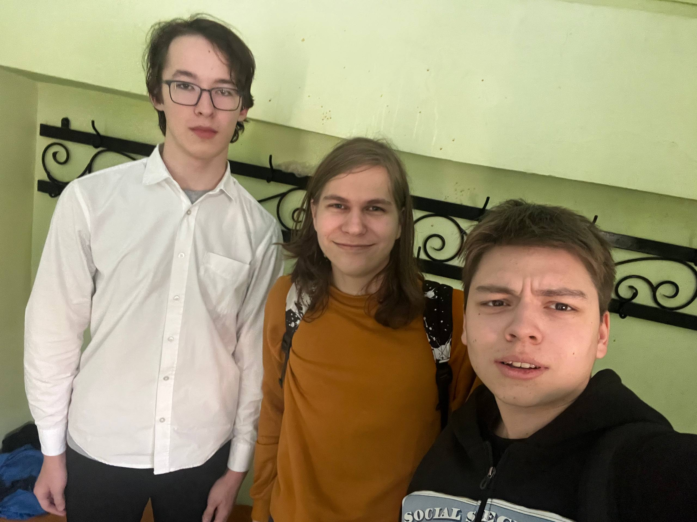
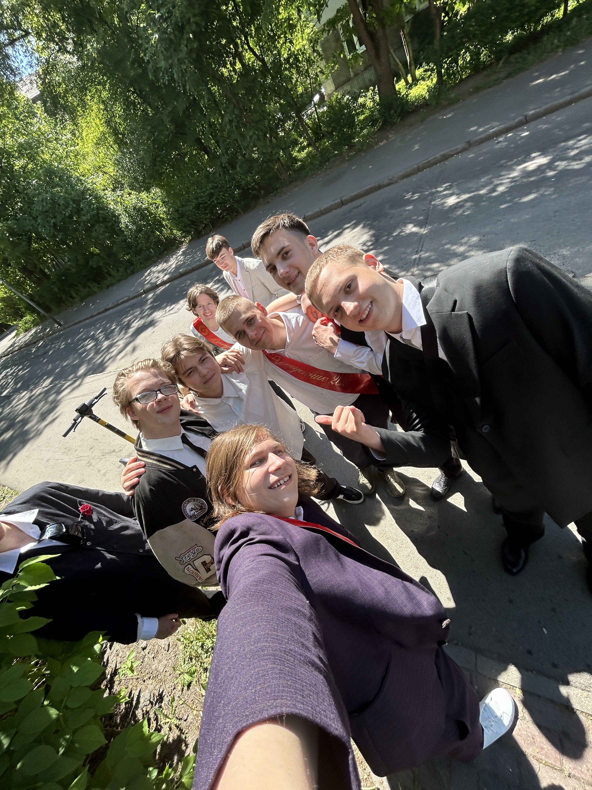
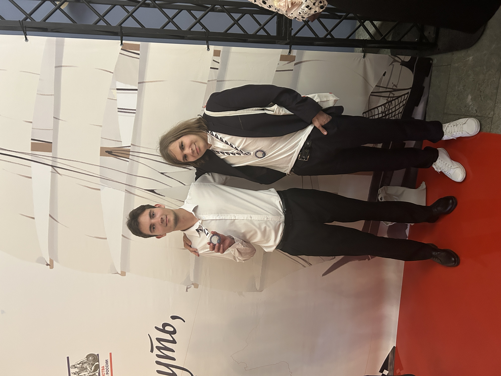
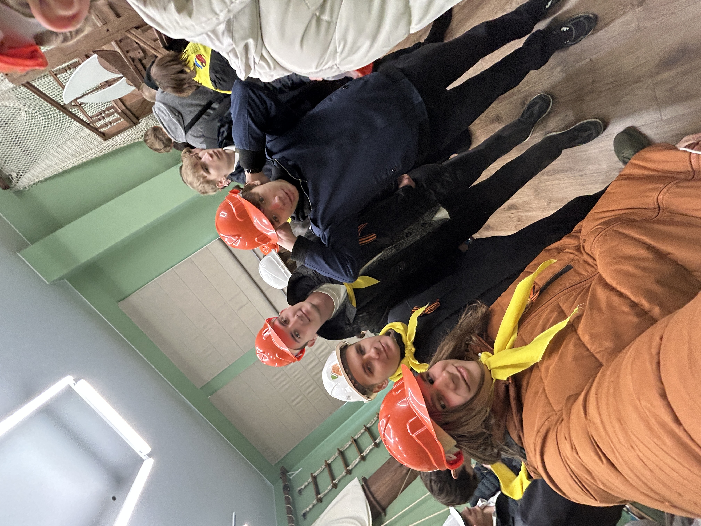
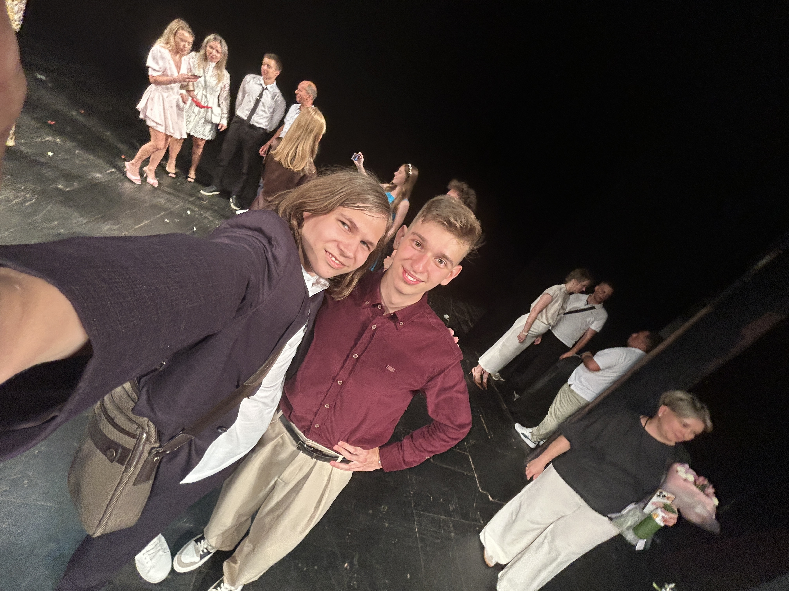
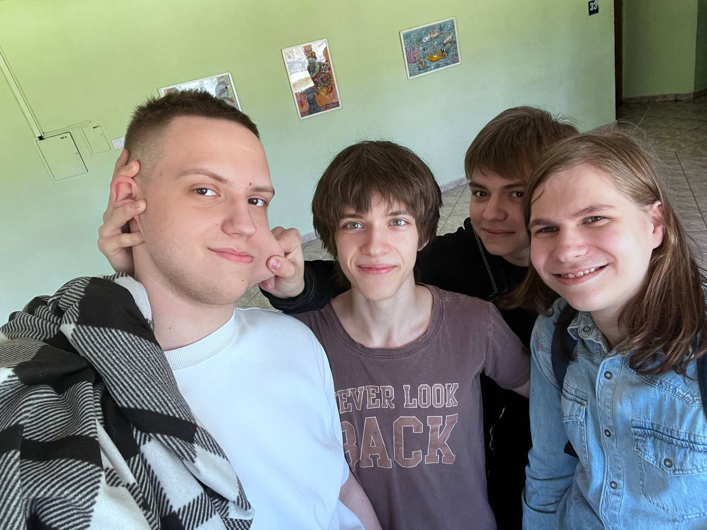
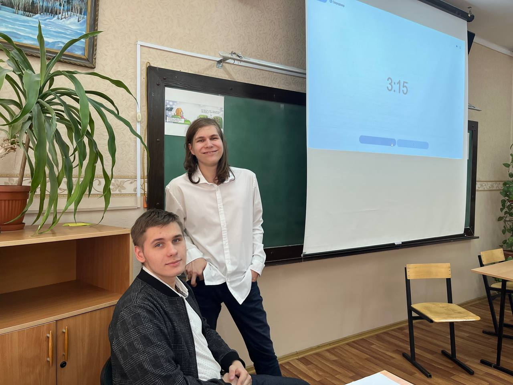
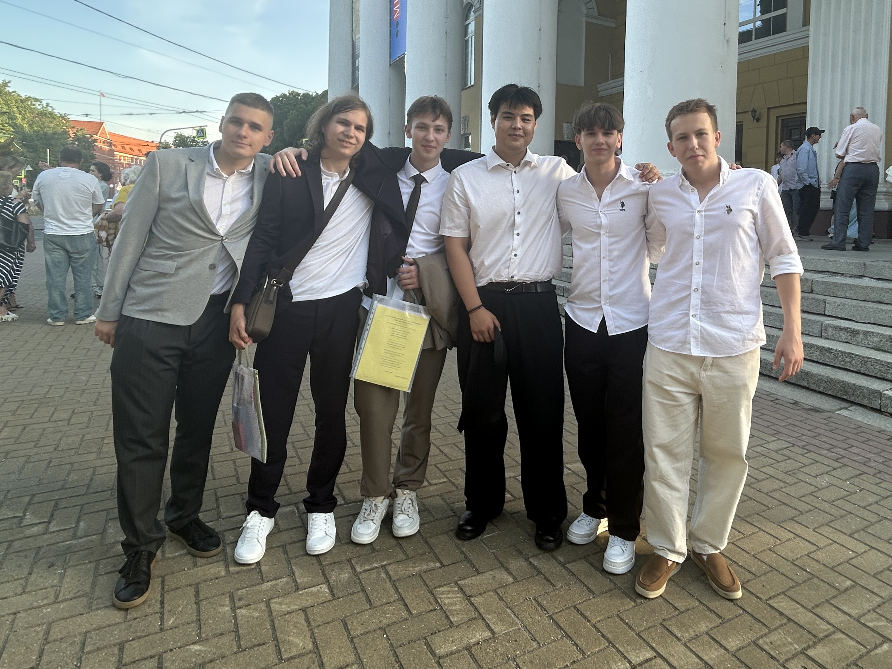

Личность: что делает меня мной
👥 Друзья
Когда я закрываю IDE, я не перестаю быть собой. Я очень ценю своё свободное время с друзьями. Даже простая переписка способна сделать меня по-настоящему счастливым. Я обожаю общаться с людьми, с которыми можно и от души посмеяться над мемами, и уйти в глубокие философские дебри, перенимая их мысли и делясь своими❤️🔥










✨ Вдохновение
Моё главное вдохновение - это музыка, а именно творчество группы Lumen✨ В их треках есть та самая внутренняя сила и мотивация, которая показывает, как нужно действовать, когда опускаются руки. Эти строчки я держу в голове каждый день:
«Кто-то сдаётся и руки опускает
Вспомни про сердце, оно не отдыхает
У него попробуй научиться
И снова продолжай биться, биться, биться»
«Птица»
«Пой, и танцуй, и неси тепло.
Как Прометей, всем смертям назло»
«Пластилин»